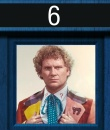
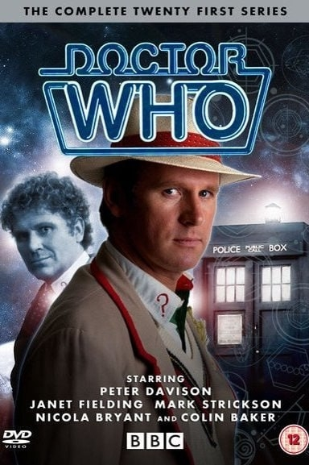
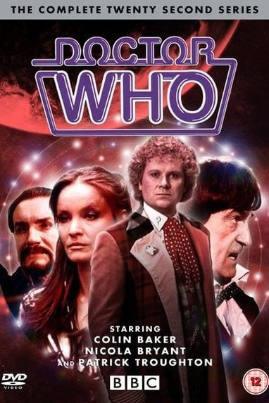
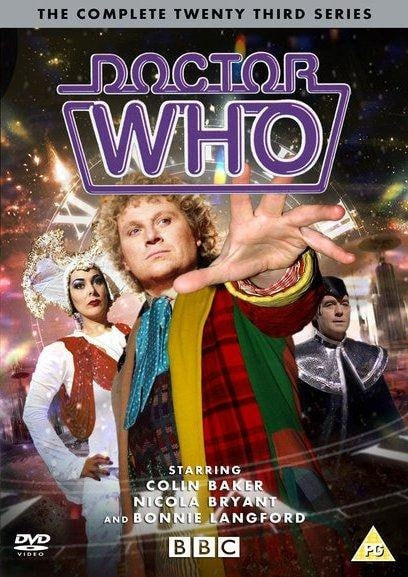

Таблица коллекции |  Навигация по канону |  Связные экранизации |





Новая эра (Ньюскул) с 2005 по 2022:


Перезапуск (Whoniverse) с 2023:


----

Эра Шестого Доктора
Актёр: Колин Бейкер
Первое появление в:
- (1984) 21 сезон, 6 серия: Пещеры Андрозани (небольшое появление)
Доктор Кто (Классика) - 21 сезон (1984) (только 7-я серия)



Дебют Шестого Доктора (Колин Бейкер): Пятый регенерирует в финале, а новый Доктор сталкивается с диктатором Местором и похищенными гениальными близнецами — история одновременно закрывает эру Питера Дэвисона и задаёт резкий, противоречивый тон новой главе, став одной из самых спорных в классике.
7. Двойная дилемма (The Twin Dilemma) - 4 эпизода
Варианты озвучек, подробности выхода и другие ссылки на просмотр в описаниях серийНаш плейлист сезона в ВК
Таблица сезонов и озвучек
Доктор Кто (Классика) - 22 сезон (1985)



Шестой Доктор (Колин Бейкер) и Пери Браун сталкиваются с киберлюдьми, диктатурой на Варосе, Рани и далеками Давроса; в «Двух Докторах» возвращается Второй Доктор (Патрик Траутон). Сезон экспериментирует с форматом (45‑минутные эпизоды) и балансирует между зрелищностью и мрачными этическими дилеммами — а «Откровение далеков» жёстко переосмысляет образ далеков, подводя к переменам в тоне сериала.
2. Возмездие на Варосе (Vengeance on Varos) - 2 эпизода
3. Метка Рани (The Mark of the Rani) - 2 эпизода
4. Два Доктора (The Two Doctors) - 3 эпизода
💽 Мини-эпизод: Передряга с сонтаранцами (A Fix with Sontarans)
5. Зазор времени (Timelash) - 2 эпизода
6. Разоблачение далеков (Revelation of the Daleks) - 2 эпизода
Варианты озвучек, подробности выхода и другие ссылки на просмотр в описаниях серий
Доктор Кто (Классика) - 23 сезон (1986) Суд над Повелителем времени



Шестой Доктор (Колин Бейкер) предстаёт перед судом Повелителей Времени — обвинитель Валеярд использует эпизоды из жизни Доктора как доказательства. Сезон выстроен как единая арка, исследующая ответственность Доктора и природу доверия среди Повелителей Времени, и знаменует серьёзный творческий перелом в сериале.
╠2. Деформация разума (Mindwarp) - 4 эпизода
╠3. Террор вервоидов (Terror of the Vervoids) - 4 эпизода
╚4. Совершенный враг (The Ultimate Foe) - 2 эпизода
Варианты озвучек, подробности выхода и другие ссылки на просмотр в описаниях серий
Также появляется в:
- (1987) 24 сезон, 1 серия: Время и Рани (небольшое появление)
- (1993) Мини-эпизоды: Измерения во времени
- (2013) 7 сезон, 13 серия: Имя Доктора (небольшое появление)
- (2013) Спецвыпуск: День Доктора (небольшое появление)
- (2022) Спецвыпуск: Сила Доктора (небольшое появление)